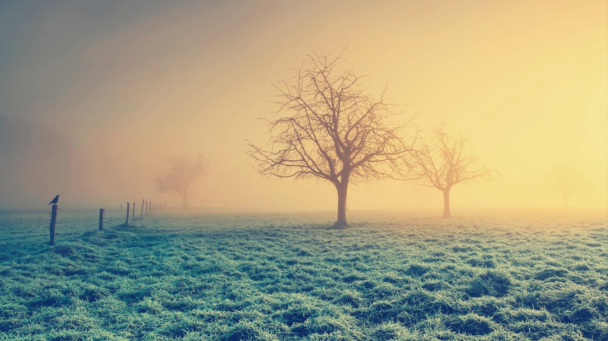

Як фотографувати пейзажі
Судячи по заголовку зрозуміло, що в даній статті розмова піде про те, як проводити зйомку на природі. Більша частина пейзажних знімків фотографи роблять у ясну та сонячну погоду. Проте при інших світлових умовах можна також робити цікаві знімки. Так ви можете проводити зйомку під час грози чи шторму, на світанку чи на заході або навіть вночі. Рівень освітленості в таких ситуаціях буває цілком різним та непередбаченим, але фотографії у вас можуть вийти досить цікавим. В більшості випадків професійні фотографи-пейзажисти проводять свої зйомки на світанку або в кінці дня. Полуденні години вони використовують для переїздів з місця на місце та пошуку об'єктів зйомки.
В нашій статті ми розглянемо ряд нестандартних ситуацій, в яких можна зробити гарні фотографії пейзажів, а поради дадуть вам змогу уникнути складнощів при ваших зйомках.
Погана погода
Вислів "погана погода" придумали люди, які надають перевагу теплій та сонячній погоді перед погодою з пронизуючим вітром та дощем. Але якщо глянути з на такий фактор з фотографічної точки зору вона є просто "погода", і чим більший дискомфорт, то тим більше створюється моментів для знімання цікавих та нестандартних кадрів.
Різноманітні погодні умови створюють свою характерну обстановку, яка дозволить вам зробити цілий ряд різних кадрів однієї і тієї ж місцевості.
Спільним тут є те, що рівень освітленості в таких умовах буває різним, а необхідну витримку в деяких випадках може становити навіть декілька секунд. Це заставляє вас обдумано та ретельно готуватися до майбутньої зйомки, і в першу чергу треба буде подбати про забезпечення нерухомості фотокамери.
Туман та мряка
Туман та ранковий серпанок повністю знебарвлюють будь-який пейзаж. Дрібні деталі губляться в перспективі, так само як і відчуття об'ємності простору, той же час біль віддалені об'єкти набувають більш світлого тону (таке явище відомо під назвою "повітряна перспектива").
Туман та серпанок виникають тільки тоді, коли тепле та вологе повітря входить в контакт з більш холодною земною або водною поверхнею, а волога, яка знаходиться у повітрі конденсується у вигляді дрібненьких крапельок. Саме через це туман найчастіше утворюється в низовинах та ярах над озерами та річками.
Якщо ви вибралися на зйомку ще до сходу сонця, то у вас буде можливість зняти пейзаж у м'яких пастельних тонах, коли перші ранкові промені починають проникати крізь товщу випарів або листя дерев, і при цьому створюють неповторний світловий ефект.
Найкраще робити зйомку в тумані на самому світанку, коли сонячні промені ще на встигли прогріти земну поверхню, а випаровування вологи ще не почалося. Такі умови частіше всього можна спостерігати навесні та восени.
Густий туман впливає на зйомку тим, що видимість обмежується лише кількома метрами, і перетворює пейзаж у сіру монохромну масу, над якою можна побачити лише дуже великі та високі об'єкти - крони дерев, шпилі соборів та церков. Але така картина не повинна вводити вас у оману, адже графічна простота туманних композицій дає можливість принести щось нове та незвичне у світ яскравих та чітких пейзажних кадрів. Щоб у вас вийшла гарна фотографія у тумані або серпанку, слід використати особливі властивості таких умов. Коли ви збираєтесь підкреслити ефект повітряної перспективи, то вам потрібно буде скористатися телеоб'єктивом, і робіть зйомку якогось протяжного по розмірам об'єкту, що тягнеться вдалину. Це може бути гірський кряж, річка або дорога, яка стає все менш помітною по мірі віддалення від місця зйомки, і врешті-решт повністю губиться десь далеко вдалині. Довгофокусна оптика, яка стискає перспективу, робить такий ефект більш вираженим. Ширококутні об'єктиви використовують для зворотного ефекту, та дозволяють включати в кадр об'єкти, які розташовані недалеко від вас і видимість яких майже не відрізняється від нормальної. Роблячи зйомку в густому тумані намагайтеся включити в кадр якийсь яскравий предмет або невелику споруду, наприклад поштову скриньку або чоловіка у червоній накидці, це дасть вам можливість зіграти на контрасті між його чітким зображенням та розмитістю загального вигляду пейзажу.
Ранковий туман та серпанок у багатьох випадках викликають помилку фотоекспонометра, оскільки частинки, що розсіюють світло, роблять кадр світлішим. Щоб уникнути такої помилки вам треба буде в таких випадках збільшити рекомендовану витримку на ? -1 ступінь. Використовуючи при зйомці світло-оранжевий фільтр 81В ви зможете збалансувати синюватий відтінок, який доволі часто спостерігається у похмуру погоду. Але деколи ви можете навіть підкреслити такий відтінок, але вже при допомозі світло-синього фільтра, щоб ваша фотографія більш тонко відображала примарний настрій туманного ландшафту.
Передштормова погода
Цікаві та захоплюючі пейзажні кадри можна отримати у перед-штормових умовах, коли проблиски сонячних променів висвітлюють невеликі фрагменти сцени на фоні грозового неба. Такі моменти виникають не дуже часто і їх досить складно передбачити. В таких ситуаціях вам доведеться досить довго стояти з фотоапаратом у руці очікуючи перерви у грозі, але коли появляться невеликі проміжки між хмарами, то освітлення в таких випадках може стати просто чудовим.
Більш сприятливими для зйомки є такі дні, коли нашарування хмар є нерівномірним, а окремі клапті хмар, під дією вітру, швидко переміщаються по небу. В такі моменти погода є дуже мінливою, і у будь-який момент один із проміжків між хмарами може опинитися якраз над вашим об'єктом зйомки.
Якщо такий момент наступає, то для зйомки кадру у вас буде лише пару секунд, тому ваша апаратура має бути в повній готовності.
В таких випадках дуже корисно використовувати ручний фотоекспонометр. Використовуючи його ви маєте можливість наперед побувати кадр, навести об'єктив на різкість, встановити потрібну діафрагму, і як тільки виникне відповідна ситуація, швидко проводите замір і встановлюєте необхідну витримку не рухаючи без потреби фотокамеру.
Дуже зручний в таких випадках спотметр, який дозволяє провести замір яскравості освітленого сонцем фрагмента, а на інше не звертати уваги. Інтегральний замір вашого фотоапарата може зреагувати в таких умовах на велику кількість темних фрагментів у кадрі, внаслідок чого відбудеться перекспонування найбільш світлого фрагменту.
Веселка
Всі ми добре знаємо, що веселка виникає саме в такі моменти, коли сонячні промені проходять крізь потоки дощу і, заломлюючись у краплинах води, розкладаються на окремі кольори сонячного спектру. Щоб відшукати положення веселки на небі, достатньо повернутися спиною до сонця і якщо напроти вас є підходяща грозова хмара, то зможете побачити цей природний феномен.
Кольори веселки можна підкреслити, якщо робити зйомку на темному фоні, а гори та пагорби та грозове небо будуть виступати у якості чудового заднього плану. Встановлення витримки менше на ? ступені також надасть змогу підвищити насиченість відтінків, а веселку зробить більш помітною. Вибір об'єктива повністю залежить від вашої мети - якщо ви задумали знімати саму веселку або її фрагмент, то краще всього встановити на фотоапарат телеоб'єктив; коли ж ви надумали зняти веселку в якості частини пейзажу, то в такому випадку вам слід скористатися 24-мм або 28-мм ширококутним об'єктивом.
Блискавка
Електричні розряди в атмосфері виникають під час самих "поганих" погодних умовах для фотозйомки, але коли творчо підійти до такої ситуації і відповідно підготуватися, то навіть в такій ситуації можна отримати чудові кадри.
Успіх зйомки блискавки залежить в першу чергу від частини світу де ви проживаєте. Так у Англії блискавки виникають досить рідко. Вони виникають в зовсім непередбачуваних місцях і мають таку властивість, що досить швидко закінчуються. Ближче до тропічного поясу грози відбуваються вже частіше і по часу набагато триваліші. Так на півдні США та в Австралії грозові явища виникають набагато частіше і досить тривалі у часі. Тут фотограф має достатньо шансів, щоб зробити досконалі фотографії цього унікального природного явища. Зйомку блискавок виконують по аналогії зйомки феєрверків та салютів.
При зйомці блискавки необхідно встановити фотокамеру на штатив і відповідно захистити її від попадання вологи. Далі направляємо об'єктив в напрямку можливого появлення розрядів блискавок, і після цього відкриваємо затвор на позиції витримки "В", діафрагму встановлюємо f/11 або f/16.
Блискавки вночі з'являються частіше ніж у день, і в таких умовах фотозйомку проводити набагато легше, бо у такій ситуації ви зможете тримати відкритим затвор фотокамери відкритим на протязі одної чи навіть двох хвилин без небезпеки переекспонування. Якщо під час грози між окремими розрядами блискавки проходить багато часу, то ви можете після чергового спалаху прикрити об'єктив аркушем картону, і відкривати його в момент появи наступного розряду блискавки. В цьому випадку ви зможете відобразити на одному кадрі одразу декілька блискавок, що надасть вашому фотознімку особливого драматизму.
Ріки та водоспади
Чудовими об'єктами для зйомки при недостатній освітленості є потоки води. Це визвано тим, що довга витримка дає можливість перетворити зображення води у розмитий ореол, при цьому досить добре передає відчуття руху, на відміну віз зйомки об'єктів при короткій експозиції. Відразу виникає запитання, а наскільки коротким має бути значення витримки? Насамперед це залежить від кількості води та швидкості її руху. Починати можна зйомку використовуючи витримку 1 сек. Проте не завадить і зробити ряд експериментів з витримками 5 сек., 10 сек., 30 сек., а деколи навіть і більше, це дасть вам можливість зробити ваші фотографії досить цікавими. Перебуваючи в лісі або затіненій місцевості можна обмежитися витримкою 1 сек., при цьому встановивши значення діафрагми в межах f/11 - f/22. На початку або наприкінці дня, а також при наявності щільної хмарності, можна проводити зйомку і на більш тривалих значеннях експозиції.
В тих випадках, коли рівень освітленості не дає вам змоги зробити витримку досить тривалою, навіть якщо ви закрили діафрагму об'єктива до самого кінця, то в такому випадку самим простим рішенням буде використання світофільтрів, які в значній мірі послаблять світловий потік, і тим самим дадуть вам можливість збільшити значення витримки. В таких випадках вам ідеально підійдуть фільтри нейтральної щільності, які не впливають на зміну балансу кольорів кадру. Не маючи фільтрів ви можете використати поляризаційний фільтр вашої фотокамери, адже він може зменшити яскравість на ступені експозиції, тим самим дозволяючи вам збільшити витримку у чотири рази. Проводячи зйомку річок або струмків намагайтеся завжди включити в кадр якийсь статичний елемент, який дасть змогу підкреслити рух потоку води. Особливо ефектно будуть виглядати виступаючі над поверхнею води камені та скелі. Знімаючи водоспади, обов'язково відійдіть на декілька кроків назад або скористайтеся широкутним об'єктивом, який дасть можливість включити у кадр оточуючий ландшафт.